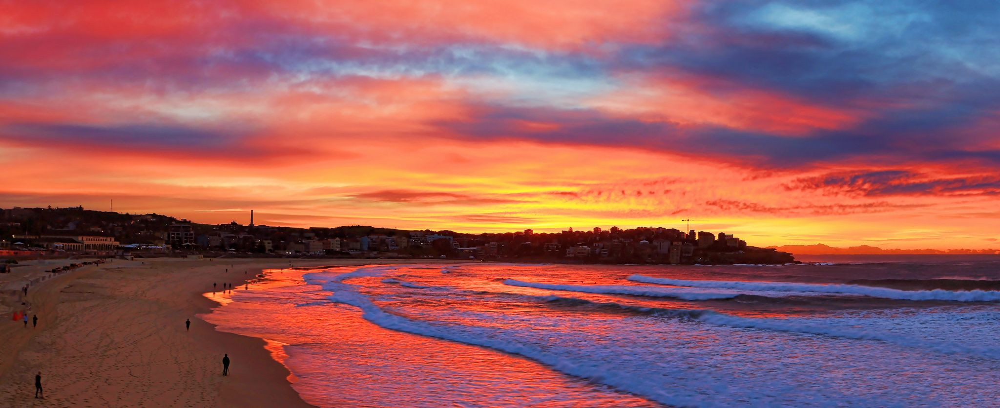

Sydney Opera House & Sydney Harbour
No trip to Australia is complete without visiting Sydney's iconic Opera House and the stunning Sydney Harbour. The Opera House, with its unique sail-like architecture, is one of the most recognizable buildings in the world. The surrounding harbor offers scenic views, vibrant cafes, and some of the best walking paths.
Great Barrier Reef, Queensland
The Great Barrier Reef is a wonder of the natural world, stretching over 2,300 kilometers along the coast of Queensland. It's a haven for divers and snorkelers, offering an underwater paradise filled with colorful coral, diverse marine life, and crystal-clear waters.
Uluru (Ayers Rock), Northern Territory

Uluru is a spiritual and cultural landmark located in the heart of the Australian outback. This massive sandstone monolith, often referred to as Ayers Rock, stands tall at 348 meters and changes color at sunrise and sunset.
Great Ocean Road, Victoria

The Great Ocean Road is one of the world’s most scenic coastal drives. Stretching along the south-eastern coast of Australia, the road offers breathtaking views of dramatic cliffs, sandy beaches, and lush rainforests. Highlights include the Twelve Apostles rock formations, Loch Ard Gorge, and the coastal town of Lorne.
Tasmania’s Cradle Mountain
Tasmania is home to some of Australia's most pristine wilderness, and Cradle Mountain is a standout. Part of the Cradle Mountain-Lake St Clair National Park, this stunning peak offers hiking, wildlife spotting, and jaw-dropping scenery.
The Whitsundays, Queensland

The Whitsunday Islands are a group of 74 tropical islands located off the coast of Queensland, known for their white sand beaches and crystal-clear waters. Whitehaven Beach, in particular, is famous for its silica sand, often considered some of the purest in the world.
Melbourne’s Laneways and Street Art

Melbourne is known for its dynamic arts scene, and one of the best places to explore this is in the city’s hidden laneways. These narrow streets are lined with vibrant street art, unique cafes, and boutique shops.
Kangaroo Island, South Australia
Kangaroo Island is an unspoiled paradise that offers some of the best wildlife experiences in Australia. Just off the coast of South Australia, it's home to kangaroos, koalas, sea lions, and diverse birdlife.
Bondi Beach, Sydney
Bondi Beach is an iconic Sydney destination, renowned for its golden sands, world-class surf, and vibrant beach culture.